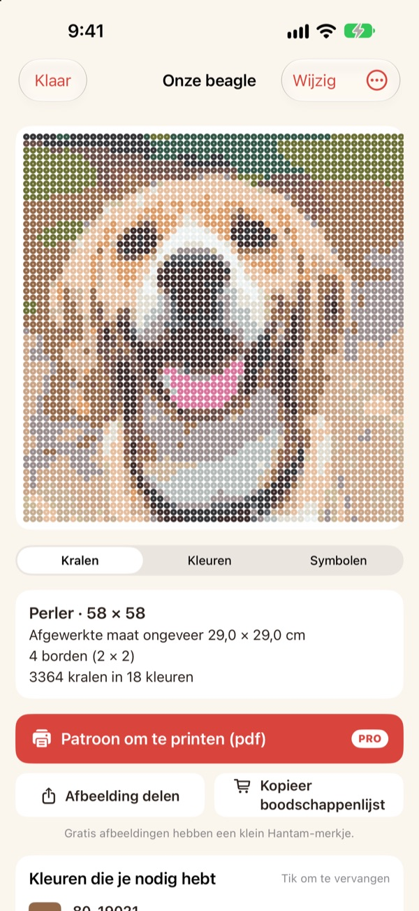
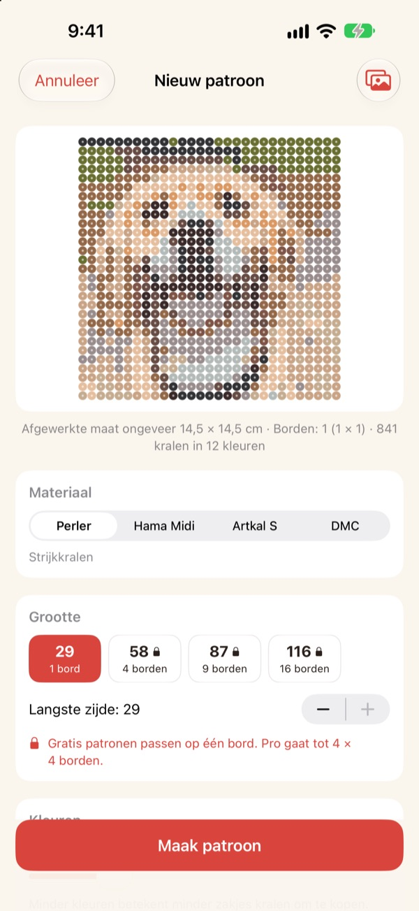
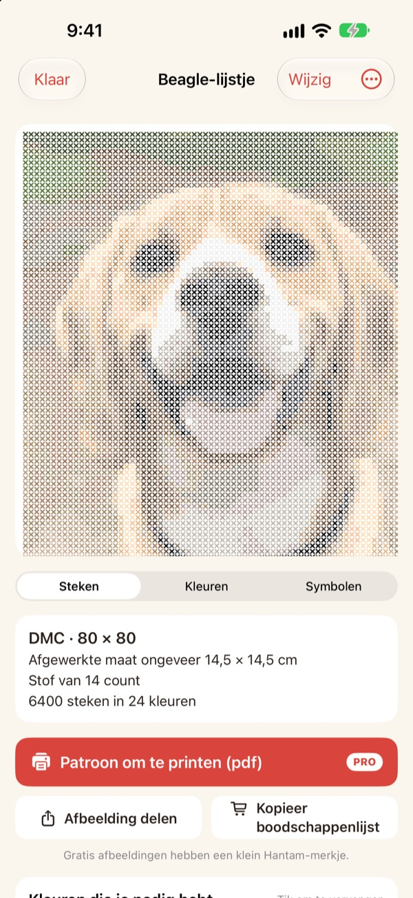
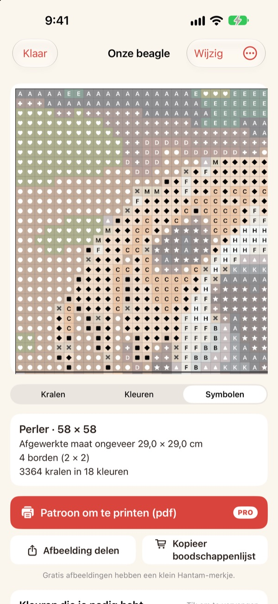
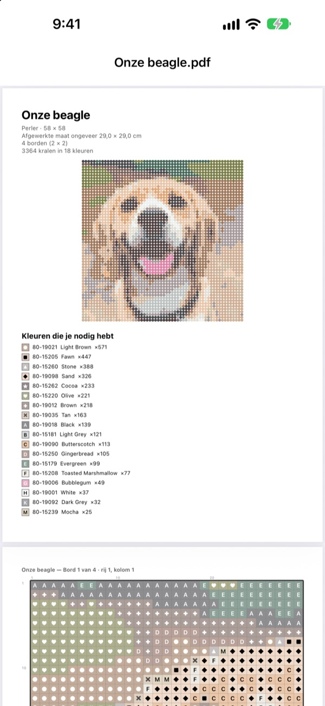

Van een foto
een patroon
Kies een foto van je huisdier, jezelf of je favoriete figuur. Hantam maakt er een patroon voor strijkkralen of kruissteek van, in kleuren die je echt kunt kopen.
Gratis voor patronen van één strijkplaat. Je foto's verlaten je iPhone niet.

Probeer het met een foto
Dezelfde kleurkoppeling als in de app, met de echte Perler-kleurenkaart. Pas de grootte en het aantal kleuren aan, of probeer een eigen foto.
Een patroon maken is makkelijk. Echte kraalkleuren vinden niet
Pixel je een foto in een willekeurige fotobewerker, dan krijg je kleuren die geen enkele kraal of geen enkel garen heeft. Dan moet je raden uit welk potje elk vakje komt en tellen hoeveel je van elke kleur moet kopen. Hantam kiest alleen uit kleuren die echt verkocht worden en vertelt precies hoeveel je nodig hebt.
Echte kleuren, echte nummers
Kies kralen van Perler, Hama Midi of Artkal S, of DMC-garen. Elk vakje krijgt een kleur die dat merk echt verkoopt, met het kleurnummer erbij.
Jij bepaalt de grootte en het aantal kleuren. Grote patronen worden verdeeld over strijkplaten van 29 × 29.

Ook voor kruissteek
Kies DMC-garen en dezelfde foto wordt een kruissteekpatroon. Kies Aida-stof van 11, 14, 16 of 18 count en Hantam toont de uiteindelijke maat en hoeveel steken elke kleur nodig heeft.

Je weet precies wat je moet kopen
Schakel over naar het symbolenpatroon en werk vakje voor vakje, met dikke lijnen bij elke plaatrand of elke 10 steken. Zie hoeveel kralen elke kleur nodig heeft en gebruik Kopieer boodschappenlijst met één tik.
Tik op een vakje om het te veranderen, of vervang overal de ene kleur door de andere.

Print het en begin
Met Pro exporteer je een Patroon om te printen (pdf): eerst de kleurenlijst, daarna symbolenpatronen per strijkplaat.

In drie stappen een patroon
- 1
Kies een foto
Huisdieren, gezichten, logo's en figuren werken allemaal. Foto's met een duidelijk onderwerp worden het mooist.
- 2
Kies kralen of garen
Bepaal het merk, de grootte en het aantal kleuren.
- 3
Aan de slag
Volg het patroon op het scherm, of print het met Pro.
Materialen en maten
- Perler · Hama Midi · Artkal S
- Strijkkralen, strijkplaten van 29 × 29, elke kraal ongeveer 5 mm
- DMC
- Kruissteekgaren op Aida van 11, 14, 16 of 18 count
- Gratis
- Kralen tot 1 strijkplaat (29 vakjes), garen tot 40 steken aan de langste kant
- Pro
- Kralen tot 4 × 4 strijkplaten (116 vakjes), garen tot 200 steken
- Kleuren
- Van 2 tot 50 per patroon
Perler, Hama, Artkal en DMC zijn handelsmerken van hun respectieve eigenaren. Hantam is niet aan hen verbonden. Kleuren op het scherm kunnen iets afwijken van het echte materiaal.
Begin gratis. Pro voor grote patronen en printen.
Gratis
- Patronen tot één strijkplaat of 40 steken
- Alle merken: Perler, Hama, Artkal en DMC
- Aantallen per kleur, boodschappenlijst en kleuren wisselen
- Tot 3 bewaarde patronen
- Afbeeldingen delen met een klein Hantam-merkje
Hantam Pro
- Pdf-patronen om te printen
- Tot 4 × 4 strijkplaten of 200 steken
- Onbeperkt patronen bewaren
- Afbeeldingen zonder merkje
- Alle pixelart-tools
Maand- of jaarabonnement, of een eenmalige aankoop voor altijd
Je kunt Pro ook cadeau doen aan een vriend, rechtstreeks vanuit de app.
Veelgestelde vragen
Worden mijn foto's ergens geüpload?
Nee. Foto's en patronen worden alleen op je iPhone verwerkt en bewaard.
De kleuren zien er iets anders uit dan mijn kralen.
Een scherm toont kleuren anders dan plastic en garen. Tik op een kleur in de lijst om hem te vervangen door een kleur van hetzelfde merk die er dichter bij zit.
Hoe groot kan een patroon worden?
Gratis past het op één strijkplaat van 29 × 29 of 40 steken aan de langste kant. Met Pro tot 4 × 4 strijkplaten (116 kralen) of 200 steken.
Welke foto's werken het best?
Foto's met één onderwerp en een rustige achtergrond. Hoe minder kleuren, hoe strakker het patroon, dus verlaag het aantal kleuren als het resultaat druk oogt.
Kan ik nog steeds pixelart maken?
Ja. Foto's pixelen, tekenen aan de hand van 110 voorbeelden en beeld-voor-beeldanimatie zitten er nog allemaal in. Alle pixelart-tools zitten in Pro.
Hoe herstel ik mijn aankoop?
Open de instellingen in de app en tik op Aankopen herstellen. Gebruik hetzelfde Apple-account waarmee je Pro hebt gekocht.
Hoe zeg ik mijn abonnement op?
Ga naar Instellingen op je iPhone › je naam › Abonnementen en kies Hantam. Toegang voor altijd is een eenmalige betaling en wordt nooit verlengd.
Hoe meld ik een fout of stel ik iets voor?
Het snelst is feedback sturen vanuit de instellingen van de app. Je kunt ook mailen naar het adres hieronder of een DM sturen op Instagram (@lee25_ios).
Vragen, fouten en ideeën zijn welkom op leeo@kakao.com.